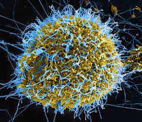

History — Selected Viruses
Ten selected viruses with short historical details and images. Each entry includes a "curve" canvas suitable for a small timeline/curve visualization.
COVID‑19
- First discovered: 2019
- Origin: Wuhan, China
- Source: Likely zoonotic
- Spread: Respiratory droplets / aerosols
- Major outbreaks: Global pandemic 2020 onwards
- Impact: Millions of deaths; global disruptions
Influenza (Flu)
- First identified (virus): 1933
- Origin: Global (multiple reservoirs)
- Source: Animal reservoirs (birds, swine)
- Spread: Respiratory droplets
- Major outbreaks: 1918, 1957, 1968, 2009
- Impact: Seasonal morbidity, occasional pandemics
Dengue
- First described: 18th century (virus identified 1943)
- Origin: Likely Southeast Asia / Africa
- Source: Aedes mosquitoes
- Spread: Mosquito bites
- Major outbreaks: Frequent epidemics across tropics
- Impact: High morbidity in endemic regions
Smallpox
- Recorded: Ancient times
- Origin: Possibly Africa/Asia
- Source: Variola virus (human-to-human)
- Spread: Respiratory droplets / contact
- Major outbreaks: Global until eradication campaign
- Impact: Eradicated in 1980 via vaccination
Rabies
- First recorded: Ancient
- Origin: Worldwide
- Source: Animal reservoirs (dogs, bats)
- Spread: Bites/saliva
- Major outbreaks: Endemic regions with dog transmission
- Impact: Fatal if untreated; PEP prevents disease
HIV/AIDS
- First identified: 1981 (AIDS), 1983 (HIV)
- Origin: Central Africa
- Source: Zoonotic transfer from SIV
- Spread: Blood, sexual contact, perinatal
- Major outbreaks: Global pandemic since 1980s
- Impact: Tens of millions of deaths; chronic treatment
Hepatitis (A,B,C)
- Identified: 20th century (Hep C in 1989)
- Origin: Global
- Source: Food/water (A), blood (B/C)
- Spread: Varies by type
- Major outbreaks: Healthcare-related spread pre-screening
- Impact: Chronic liver disease, cancer risk
Zika
- First discovered: 1947
- Origin: Zika Forest, Uganda
- Source: Aedes mosquitoes
- Spread: Mosquito bites; sexual transmission
- Major outbreaks: 2015–2016 Americas
- Impact: Congenital defects (microcephaly)

.jpg)
Ebola
- First discovered: 1976
- Origin: DRC region
- Source: Likely bats/wildlife
- Spread: Contact with bodily fluids
- Major outbreaks: 2014–2016 West Africa
- Impact: High fatality; serious local disruption
Yellow Fever
- First identified (virus): 1901
- Origin: Tropical Africa / South America
- Source: Mosquito–primate cycle (Aedes/Haemagogus)
- Spread: Mosquito bites
- Major outbreaks: Historic urban epidemics in Americas and Africa
- Impact: Severe disease with jaundice/bleeding; effective vaccine reduces burden
Tip: open the 'Graphs (10)' page for fuller timeline graphs of these viruses.

.jpg)